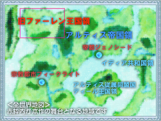

＜＜世界観と前作のあらすじ＞＞
|
■ ワールドマップ |

『IndeTerminate』シリーズの世界の全体像です。
赤枠内のファーレン地方が本作の舞台となる場所です。
|
■ この世界の神話と女神レフィリア
数える事も困難な程の昔・・・神話の時代・・・世界を闇が覆い尽くそうとしていました。誰もが諦めてしまったとき・・・一人の女性術士が闇の前に立ち塞がりました。術士の名前はレフィリア。彼女は人間の理解を超える程の強大な術力で、闇を祓い、世界を救いました。人々は彼女を賞賛し称えました。
時が流れ、やがて彼女は『女神』として祭られるようになりました。
実在したと言われる『女神レフィリア』・・・神話となった今、真偽の程は定かではありません。しかし、現代でも彼女は女神として人々の絶大の信仰を集めています。
|
■ この世界の現状
長い騒乱の時期を経て、世界は一応の平穏を保っています。
各地で小さな争いはありますが、世界を巻き込むような大きな事件もありません。
現在、最も強大で世界に君臨しているのは『アルティス帝国』です（ゲーム中では単に帝国と呼称されています）。
実に全世界の半分を支配するに到っています。
本作の舞台となるのは『ファーレン』という地域で、嘗て帝国に滅ぼされた『ファーレン王国』のあった場所です。
主人公のティナは、この滅びたファーレン王国の姫です。
|
■ レフィリア教会
女神レフィリアを崇拝する多国籍宗教団体です。この教会は、全世界の人口の３分の２の人々が信者というとてつもない規模です。
信者になることには何の制約も制限もありませんが、教会に入会するには『術士』の才能が無ければなりません。術士の才があるのは１００人に一人の割合で、術士は一言で言えばエリートです。
術士の操る術は『聖術』『魔術』『神術』に大別され、教会の術士は『聖術』を使い『聖術士』と呼ばれています。教会は『魔術』を禁呪とし『魔術』を操る『魔術士』を嫌っています。また『神術』は『聖術士』『魔術士』を問わず、とてもＬＶの高い者が操る事ができる術です。
教会は術士を育てる学校的な役割も担っています。
主人公のアレイドとティナは教会の術士です。
|
■ 『IndeTerminatePLUS』
主人公のアレイドはレフィリア教会フィークライト大神殿所属の落ちこぼれ術士。
ある日、師のエルシール神官の使いで、遥か遠方の帝都ジェノシードにあるジェノシード大神殿の神官長へ手紙を届けることに。
アレイドは旅先で、剣士リーク・聖術士フィーナ・戦士リディアらと出会い、彼等と共に幾多の困難を乗り越えて、無事に使いを済ませる事ができた。
彼は、この旅を通して心身ともに大きく成長した。
実は、師エルシールの真意は、手紙を届ける旅でのアレイドの成長であった。
|
■ 『女神の涙』
通称『女神の涙強奪未遂事件』。
教会の至宝『レフィリアの涙』は他に類をみない美しい宝石。
しかし、世界大戦中に帝国との不可侵協定の為に帝国へ差し出されており帝国管理下にある。
これを、レフィリア教会イディア大神殿副神官長ミラルド＝ジーンが強奪を画策。
彼は、それによって教会と帝国の関係を悪化させ、更なる世界大戦を誘発させようとしていた。
彼の主張は『世界は教会が支配すべき。帝国の象徴は軍事力と皇帝・・・皇帝が代われば国も変わり、軍事力が衰えれば存在自体が危うくなる不安定な体制だ。だが、教会の象徴は女神レフィリア・・・人々の心の中で普遍の存在だ。戦力においては教会は帝国に勝る。だが、教会は一切の軍事的行為を是としない。ならば私がきっかけを作り、引き返せない状況を作るまで・・・』
しかし、当時はまだ無名だった盗賊シャドウナイトを軽く見ていた事が仇となり、計画は頓挫。ミラルドは失脚した。
|